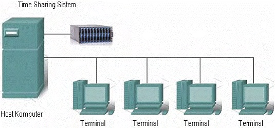

Dari kebanyakan orang pengguna computer/ laptop tentu tidak asing lagi tentang system operasi Karena dalam sebuah PC/laptop pasti menggunakan system operasi. Tapi dari kebanyakan orang tidak mengetahui sejarah perkembangan system operasi itu sendiri. Disini saya akan berbagi pengetahuan tentang sejarah system operasi
Menurut Tanenbaum, sistem operasi mengalami perkembangan yang sangat pesat, yang dapat dibagi ke dalam empat generasi :
Generasi Pertama ( Tahun 1940-an dan 1950-an )
Pada tahun 1940-an komputer elektronik digital yang pertama tidak memiliki sistem operasi. Program dimasukan dari punched card. Baru Pada tahun 1950-an sistem operasi pertama kali diimplementasikan oleh The General Motors Research Laboratories pada IBM 701. Sistem operasi ini hanya mampu menjalankan pekerjaan satu per satu, dengan mengumpulkan program dan data satu persatu dalam group atau antrian (batch) sehingga disebut juga dengan Singlestream Batch processing Systems.
- Komponen utamanya berupa tabung hampa udara.
- Semua operasi komputer dilakukan secara manual melalui plugboard, dan hanya bisa digunakan untuk menghitung (+, - dan * )
Generasi Kedua ( Tahun 1960-an )
Pada tahun 1960-an juga masih menggunakan pemrosesan batch, tetapi sudah dapat melakukan dengan baik pada resource komputer dengan menjalankan beberapa tugas sekaligus. Berisi banyak device, seperti pembaca kartu, punch card, printer, tape drive dan disk drive.
Pada saat itu para perancang sistem operasi menggunakan konsep bahwa apabila terdapat pekerjaan yang sedang menunggu operasi input-output device dan prosesor tidak sedang bekerja maka suatu pekerjaan lain dapat menggunakan prosesor. Konsep ini dikembangkan dengan nama multiprogramming di mana beberapa pekerjaan diletakan dalam memori utama sekaligus dan prosesor dapat berganti-ganti melakukan tugas sesuai kebutuhan untuk menjaga efisiensi waktu.
Pada tahun 1964, IBM mengumumkan sistem komputer berbasis system/360, didesain untuk kompatibilitas hardware, dan memiliki kemampuan yang lebih besar. Dikembangkan sistem operasi yang mendukung timesharing untuk melayani sejumlah user secara interaktif sekaligus dimana user dapat secara interaktif berkomunikasi dengan komputer melalui terminal yang terhubung ke komputer. Masing-masing developer kemudian mengembangkan teknologi berdasarkan timesharing seperti CTSS dari MIT dan TSS dari IBM. Berkat CTSS maka MIT berhasil menciptakan Multics, sistem operasi pertama yang sebagian besar dibuat dengan bahasa pemrograman tingkat tinggi yang mengilhami desainer UNIX untuk menciptakan bahasa C.
- Komponen utamanya berupa transistor
- Input memakai punch card
Generasi Ketiga ( Tahun 1970-an )
Pada tahun 1960-an sistem operasi merupakan software yang dikembangkan oleh orang-orang yang tidak mengenal software sebaik mereka menguasai hardware. Demi realibilitas, agar sistem operasi itu mudah dimengerti dan mudah di maintain, berbagai usaha dicurahkan untuk mencari solusi, sampai akhirnya kemudian lahir software engineering.
Sebagian besar sistem tahun 1970-an digunakan pada minikomputer dengan sistem timesharing multimode yang mendukung batch processing, timesharing, dan aplikasi real time. Eksperimen sistem timesharing pada tahun 1960-an telah menjadi produk komersial yang baik. Komunikasi antar sistem komputer di Amerika meningkat. Standar komunikasi TCP/IP dari department of defense yang secara luas terutama di kalangan militer dan kalangan universitas. komunikasi dalam LAN dibuat dan diterapkan secara ekonomis dengan adanya standar Ethernet yang dikembangkan Xerox's Palo Alto Research Center. Proses Enskripsi dan deskripsi pun mulai diperhatikan
- Komponen utamanya berupa IC (Integrated Circuits)
- Pada masa ini berkembang sebagai konsep, seperti :
- Multiprogramming, satu komputer mengerjakan banyak program yang ada di dalam memori utama
- Multiprocessing, satu proses dikerjakan oleh banyak prosesor untuk meningkatkan kinerja.
- Spooling (Simultaneous Periperal Operation On Line ), bertindak sebagai buffer dan mampu menerima proses meskipun belum dikerjakan
- Device Independence, masing-masing komponen memiliki sifat yang saling berbeda
- Timesharing atau multitasking , menjalankan proses dalam satu waktu
- Real Time System ,sebagai control hardware
Generasi Keempat ( Tahun 1980-an )
Tahun 1980-an merupakan dekade dari personal computer (PC) dan workstation. Teknologi mikroprosesor berkembang sehingga memungkinkan komputer desktop. Aplikasi software seperti spreadsheet, word processor, database, maupun grafis terus berkembang dan mendukung terjadinya revolusi PC.

Generasi Kelima ( Tahun 1990-an )
Teknologi PC berkembang semakin pesat, disertai dengan perkembangan teknologi multimedia. Sistem operasi menggunakan GUI( Graphical User interface ). Teknologi Multi-threading pun dikembangkan secara luas. Mikroprosesor berbasis RISC untuk PC dikenalkan. Teknologi jaringan dan internet berkembang dengan pesat.
Dari tahun ke tahun sistem operasi menunjukan perkembangan yang lebih canggih dalam sistemnya.
Tahun 1991
- Linux 0.01 : Mahasiswa Helsinki bernama Linus Torvalds mengembangkan OS berbasis Unix dari sistem operasi Minix yang diberi nama Linux.
- MS DOS 5.0 : Microsoft meluncurkan MSDOS 5.0 dengan penambahan fasilitas full-screen editor, undelete, unformat dan Qbasic.
Tahun 1992
- Windows 3.1 : Microsoft meluncurkan Windows 3.1 dan kemudian Windows for Workgroups 3.11 di tahun berikutnya.
- 386 BSD : OS berbasis Open Source turunan dari BSD Unix didistribusikan oleh Bill Jolitz setelah meninggalkan Berkeley Software Design, Inc (BSDI). 386 BSD nantinya menjadi induk dari proyek Open Source BSD lainnya, seperti NetBSD, FreeBSD, dan OpenBSD.
- Distro Linux : Linux didistribusikan dalam format distro yang merupakan gabungan dari OS plus program aplikasi. Distro pertama Linux dikenal sebagai SLS (Softlanding Linux System).
Tahun 1993
- Windows NT : Microsoft meluncurkan Windows NT, OS pertama berbasis grafis tanpa DOS didalamnya yang direncanakan untuk server jaringan.
- Web Browser : NCSA memperkenalkan rilis pertama Mosaic, browser web untuk Internet.
- Slackware : Patrick Volkerding mendistribusikan Slackware Linux yang menjadi distro populer pertama di kalangan pengguna Linux.
- Debian : Ian Murdock dari Free Software Foundation (FSF) membuat OS berbasis Linux dengan nama Debian.
- NetBSD : Proyek baru OS berbasis Open Source yang dikembangkan dari 386BSD dibuat dengan menggunakan nama NetBSD.
- FreeBSD : Menyusul NetBSD, satu lagi proyek yang juga dikembangkan dari 386BSD dibuat dengan nama FreeBSD.
Tahun 1994
- Netscape : Internet meraih popularitas besar saat Netscape memperkenalkan Navigator sebagai browser Internet.
- MSDOS 6.22 : Microsoft meluncurkan MSDOS 6.22 dengan program kompresi bernama DriveSpace. Ini merupakan versi terakhir dari MS DOS
- FreeDOS : Jim Hall, mahasiswa dari Universitas WisconsinRiver Falls Development mengembangkan FreeDOS. FreeDOS dibuat setelah Microsoft berniat menghentikan dukungannya untuk DOS dan menggantikannya dengan Windows 95.
- SuSE : OS Linux versi Jerman dikembangkan oleh Software und System Entwicklung GmbH (SuSE) dan dibuat dari distro Linux pertama, SLS.
- Red Hat :Marc Ewing memulai pembuatan distro Red Hat Linux.
- Mac OS : Apple meluncurkan Mac OS versi 7.5 yang merupakan versi terakhir dari Mac OS yang menggunakan antarmuka grafis.
- Mac OS X : Apple meluncurkan Mac OS X yang merupakan versi pertama dari Mac OS yang menggunakan antarmuka grafis.
Tahun 1995
- Windows 95 : Microsoft meluncurkan Windows 95 yang merupakan OS pertama yang menggunakan GUI dan multitasking.
- PC DOS 7 : IBM memperkenalkan PC DOS 7 yang terintegrasi dengan program populer pengkompres data Stacker dari Stac Electronics. Ini merupakan versi terakhir dari IBM PC DOS.
- Windows CE : Versi pertama Windows CE diperkenalkan ke publik.
- PalmOS : Palm menjadi populer dengan PalmOS untuk PDA.
- OpenBSD : Theo de Raadt pencetus NetBSD mengembangkan OpenBSD.
Tahun 1996
- Windows NT 4.0 : Microsoft meluncurkan Windows NT versi 4.0
Tahun 1997
- Mac OS : Untuk pertama kalinya Apple memperkenalkan penggunaan nama Mac OS pada Mac OS 7.6.
Tahun 1998
- Windows 98 : Web browser Internet Explorer menjadi bagian penting dari Windows 98 dan berhasil menumbangkan dominasi Netscape Navigator.
- Server Linux : Linux mendapat dukungan dari banyak perusahaan besar, seperti IBM, Sun Microsystem dan Hewlet Packard. Server berbasis Linux mulai banyak dipergunakan menggantikan server berbasis Windows NT.
- Google : Search Engine terbaik hadir di Internet dan diketahui menggunakan Linux sebagai servernya.
- Japan Goes Linux : TurboLinux diluncurkan di Jepang dan segera menjadi OS favorit di Asia, khususnya di Jepang, China dan Korea.
- Mandrake : Gael Duval dari Brazil mengembangkan distro Mandrake yang diturunkan dari Red Hat.
Tahun 1999
- Support : Hewlett Packard mengumumkan layanan 24/7 untuk distro Caldera, Turbo Linux, Red Hat dan SuSE.
- Corel Linux : Corel pembuat program Corel Draw, yang sebelumnya telah menyediakan Word Perfect versi Linux, ikut membuat OS berbasis Linux dengan nama Corel Linux dan yang nantinya beralih nama menjadi Xandros.
Tahun 2000
- Mac OS/X : Mac OS diganti dengan mesin berbasis BSD Unix dengan kernel yang disebut sebagai Mac OS/X.
- Windows Me : Microsoft meluncurkan Windows Me, versi terakhir dari Windows 95.
- China Goes Linux : Red Flag Linux diluncurkan dari Republik Rakyat China.
- Microsoft vs IBM : CEO Microsoft Steve Ballmer menyebut Linux sebagai kanker dalam sebuah interview dengan Chicago SunTimes. Di lain pihak, CEO IBM Louis Gartsner menyatakan dukungan pada Linux dengan menginvestasikan $ 1 milyar untuk pengembangan Linux.
Tahun 2001
- Windows XP : Microsoft memperkenalkan Windows XP.
- Lindows : Michael Robertson, pendiri MP3.com, memulai pengembangan Lindows yang diturunkan dari Debian. Nantinya Lindows berganti nama menjadi Linspire karena adanya tuntutan perubahan nama oleh Microsoft.
Tahun 2002
- Open Office : Program perkantoran berbasis Open Source diluncurkan oleh Sun Microsystem.
- OS Lokal : OS buatan anak negeri berbasis Linux mulai bermunculan, diantaranya Trustix Merdeka, WinBI, RimbaLinux, Komura.
Tahun 2003
- Windows 2003 : Microsoft meluncurkan Windows Server 2003.
- Fedora : Redhat mengumumkan distro Fedora Core sebagai penggantinya. Nantinya ada beberapa distro lokal yang dibuat berbasiskan Fedora, seperti BlankOn 1.0 dan IGOS Nusantara.
- Novell : Ximian, perusahaan pengembang software berbasis Linux dibeli oleh Novell, begitu juga halnya dengan SuSE yang diakuisisi oleh Novell.
- LiveCD : Knoppix merupakan distro pertama Linux yang dikembangkan dengan konsep LiveCD yang bisa dipergunakan tanpa harus diinstal terlebih dahulu. Distro lokal yang dibuat dari Knoppix adalah Linux Sehat dan Waroeng IGOS.
Tahun 2004
- Ubuntu : Versi pertama Ubuntu diluncurkan dan didistribusikan ke seluruh dunia. Ada beberapa versi distro yang dikeluarkan, yaitu Ubuntu (berbasis Gnome), Kubuntu (berbasis KDE), Xubuntu (berbasis XFCE), dan Edubuntu (untuk pendidikan).
Tahun 2005
- Mandriva : Mandrake bergabung dengan Conectiva dan berganti nama menjadi Mandriva.
Tahun 2006
- Unbreakable Linux : Oracle ikut membuat distro berbasis Linux yang diturunkan dari Red Hat Enterprise.
- CHIPLux : Distro lokal terus bermunculan di tahun ini, bahkan Majalah CHIP yang lebih banyak memberikan pembahasan tentang Windows juga tidak ketinggalan membuat distro Linux dengan nama CHIPLux, yang diturunkan dari distro lokal PC LINUX dari keluarga PCLinuxOS (varian Mandriva). CHIPLux merupakan distro lokal pertama yang didistribusikan dalam format DVD.
Tahun 2007
- Vista : Setelah tertunda untuk beberapa lama, Microsoft akhirnya meluncurkan Windows Vista. Windows Vista memperkenalkan fitur 3D Desktop dengan Aero Glass, SideBar, dan Flip 3D. Sayangnya semua keindahan ini harus dibayar mahal dengan kebutuhan spesifikasi komputer yang sangat tinggi.
Tahun 2008
- 3D OS : Tidak seperti halnya Vista yang membutuhkan spesifikasi tinggi, 3D Desktop di Linux muncul dengan spesifikasi komputer yang sangat ringan. Era hadirnya teknologi 3D Desktop di Indonesia ditandai dengan hadirnya sistem operasi 3D OS yang dikembangkan oleh PC LINUX. Ada beberapa versi yang disediakan, yaitu versi 3D OS untuk pengguna umum serta versi distro warnet Linux dan game center Linux.
Tahun 2010
- Windows 7 : Sistem Operasi ini merupakan penyempurna dari sistem operasi yang di buat sebelumnya oleh microsoft. Bisa dikatakan bahwa sistem operasi ini merupakan sistem operasi terbaik yang ada pada saat ini.
Tahun 2012
- Windows 8 : Sistem Operasi ini memliki tampilan yang sangat menarik dibandingkan dengan Windows-Windows lain yang sebelumnya.
Tahun 2015
- Windows 10 : sistem operasi komputer pribadi yang dikembangkan oleh Microsoft sebagai bagian dari keluarga sistem operasi Windows NT. Windows 10 diperkenalkan pada tanggal 30 September 2014, dirilis pada 29 Juli 2015 dan pada November 2015, Threshold 2 dari Windows 10 (v10.0.10586) dirilis kepada publik.
Tahun 2021
- Windows 11 : rilis utama dari sistem operasi Windows NT yang dikembangkan oleh Microsoft. Sistem operasi ini menjadi penerus Windows 10. Windows 11 diumumkan di acara Microsoft pada 24 Juni 2021, pukul 11 pagi ET (3 sore UTC), dan dirilis resmi pada tanggal 5 Oktober 2021.